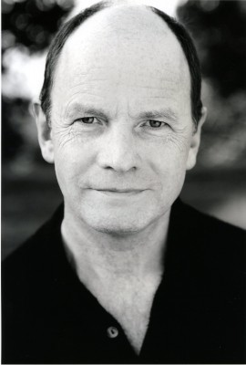
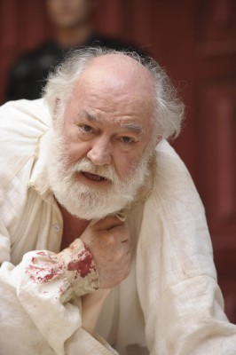
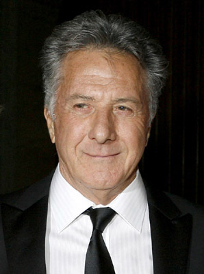
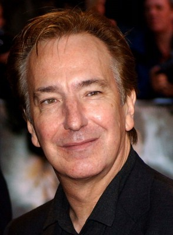
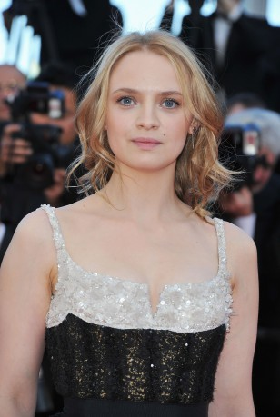
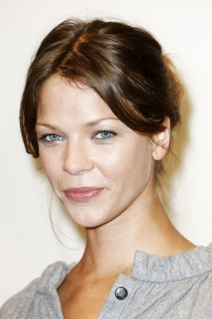
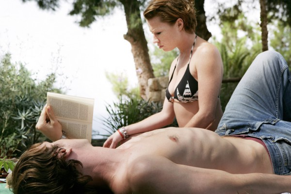

#3067 Das Parfum - Die Geschichte eines Mörders

 IMDB-Wertung: 7.5 / 10
IMDB-Wertung: 7.5 / 10  Metascore: 56
Metascore: 56 
Im 18.Jahrhundert wird in Paris Jean-Baptiste Grenouille mit einer sensorischen Anomalie geboren: er hat keinen Eigengeruch wie jeder andere Mensch, weswegen er von seiner Umwelt abgelehnt, ja praktisch gehaßt wird. Allerdings hat er im Umkehrschluß auch ein besonderes Talent: er besitzt einen Geruchssinn, den sonst niemand auf dem Planeten vorweisen kann. Schließlich geht er bei dem berühmten Parfümeur Guiseppe Baldini in die Lehre, der sich von Grenouilles Fähigkeit, jede Zutat eines Parfüms durch Riechen zu erkennen und sie blind zu mischen und zu verfeinern, großen Erfolg verspricht. Daß Grenouille bereits einen Mord begangen hat, ahnt niemand, doch der Lehrling hat große Ziele: er will den wunderbarsten Duft der Welt herstellen und findet dafür auch die passende Blume, Laure, die Tochter eines reichen Mannes. Plötzlich kommt es in seiner Umgebung zu einer Reihe von Todesfällen unter jungen, hübschen Mädchen...
Jahr: 2006
Dauer: 147 Minuten
FSK: 12
Land: Deutschland Studio: Constantin FilmTonspuren: DTS - ,
Untertitel: Deutsch,
Auflösung: 1080p (1920x816) Größe: 11264 MB
Genre: Drama, Fantasy, Krimi
Regisseur:  Tom Tykwer
Tom Tykwer
Drehbuch: Andrew Birkin, Bernd Eichinger, Tom Tykwer, Patrick Süskind
Soundtrack: Reinhold Heil, Johnny Klimek, Tom Tykwer
Darsteller:
 Ben Whishaw als Jean-Baptiste Grenouille
Ben Whishaw als Jean-Baptiste Grenouille-  Simon Chandler als Mayor of Grasse
-  David Calder als Bishop of Grasse
- Richard Felix als Chief Magistrate
- Reg Wilson als Customer Fishmarket
 Michael Smiley als Porter
Michael Smiley als Porter- Franck Lefeuvre als Grenouille 12 Years
- Sam Douglas als Grimal
- Karoline Herfurth als The Plum Girl
-  Dustin Hoffman als Giuseppe Baldini
- Carolina Vera als Neapolitan Girl
- Rachel Hurd-Wood als Laura
-  Alan Rickman als Richis
-  Sara Forestier als Jeanne
- Corinna Harfouch als Madame Arnulfi
-  Jessica Schwarz als Natalie
- Ariadna Cabrol als Beggar Woman 1
 John Hurt als Narrator
John Hurt als Narrator- Edgar Moreno als Paris Citizen , uncredited
- Jaume Najarro als Rural Orgy , uncredited
- Francesc Albiol als Court Official
- Gonzalo Cunill als Guard 1 Dungeon
- Roger Salvany als Guard 2 Dungeon
- Andrés Herrera als Door Guard
-  Birgit Minichmayr als Grenouille's Mother
- Catherine Boisgontier als Woman Fishmarket
- Núria Casas als Woman 2 Fishmarket
- Carlos Gramaje als Police Lieutenant Fishmarket
- Sian Thomas als Madame Gaillard
- Walter Cots als Driver
- Perry Millward als Marcel
- Jan Cortés als Boy Boarding House
- Berta Ros als Girl Boarding House
- Alvaro Roque als Grenouille 5 Years
- Joan Serrats als Upholsterer
- Jaume Montané als Pélissier
- Bridget McConnell als Aunt
- Duna Jové als Young Woman
- Timothy Davies als Chenier
- Dora Romano als Baldini's Wife
- Ramon Pujol als Lucien
- Paul Berrondo als Druot
- Joanna Griffiths als Marianne
- Harris Gordon als Marquis de Montesquieu
- Anna Gelman als Albine
- Laura Gelman als Françoise
- Guillermo Ayesa als Tallien
- Anna Diogene als Tallien's Wife
- Montserrat Masó als Housekeeper
- Toby Harper als Police Lieutenant
Datei: X:\2006(N-Z)\Parfum - Die Geschichte eines Mörders, Das (2006, FSK12, 1920x816).mkv seit 20.01.2016
Festplatte: HD 2005(G-Z)-2006(A-Z)
 Es gibt insgesamt 62 Filme in der Gruppe '2006(N-Z)'
Es gibt insgesamt 62 Filme in der Gruppe '2006(N-Z)'